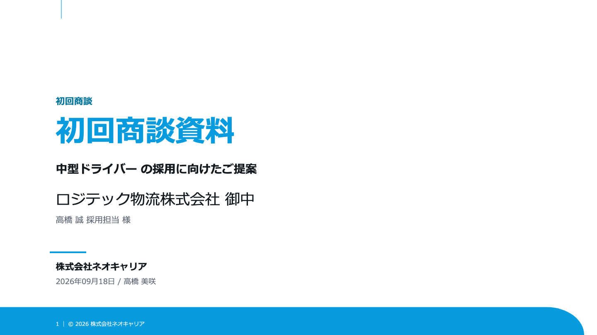
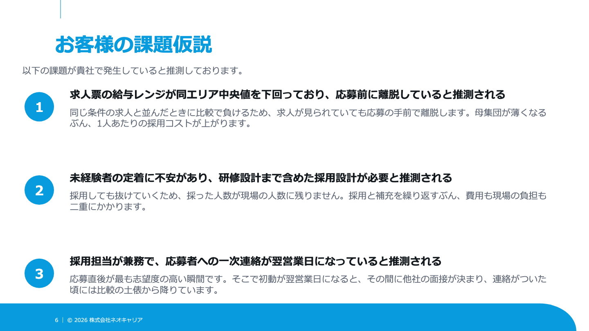
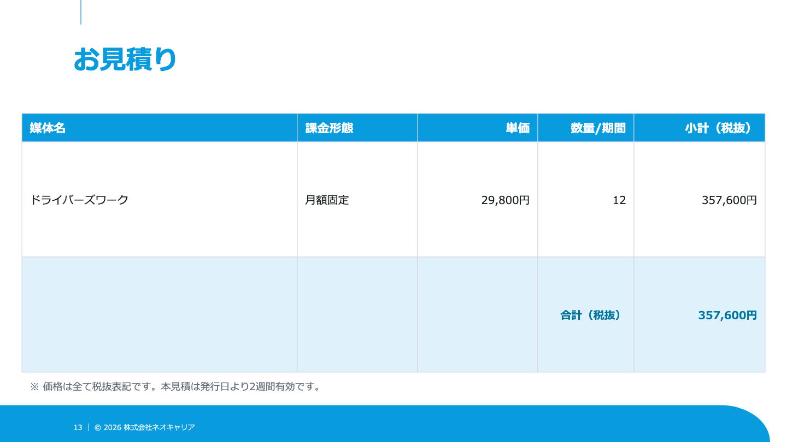

ASUMO 営業ジャーニー — 新作 v2
既存動画を上書きせず、独立フォルダ・独立ブランチで制作した、音声付きHTML疑似動画です。MP4ではありません。
確認事項 — 原稿生成・校了の画面
台本は「AI原稿生成・校了までのステータス管理」を説明していますが、指定されたASUMO本体の
feat/issue-flow の実装では、その画面を確認できませんでした。ボタンやステータスは創作せず、存在する「掲載を登録（原稿を制作）」→「入稿待ち」→「掲載開始」→「掲載中」→「請求へ」を映しています。音声・字幕は指定入力を変えず維持しています。顧客向け公開前に、この部分の実装画面または台本の整合確認が必要です。
本体参照: app/(main)/publication/page.tsx、app/components/IssuePanel.tsx、PaymentModal.tsx、DunningModal.tsx、app/(main)/outreach/OutreachWorkbench.tsx。本体のコード・データ・サーバーは今回変更していません。
編集内容
| 項目 | 対応 |
|---|---|
| 旧動画の扱い | /Users/kagohashiyu-ki/work/asumo-demo は変更対象外。新作は /Users/kagohashiyu-ki/work/asumo-demo-video-v2、ブランチ feat/video-v2 に保存。 |
| 新作から外した画面 | /invoice の請求一括発行、/monthly の月次レポート。台本に該当行がないため新作には入れていません。元動画・Git履歴には残っています。 |
| タイトル | No.1, 2, 4, 14, 23, 27, 34, 44, 50 の9枚。指示書の「8枚」という表記より、列挙された対象行を優先。No.1は2文を切り替え、No.50は既存のロゴ部品を流用。 |
| 操作の尺 | リスト作成34.89秒、テレアポ39.92秒。全体を倍率で一括圧縮せず、クリック→反応→結果が続くよう個別に編集。 |
| 減らした演出 | リスト作成の補足設定、CSVの詳細設定とDry-Run、メールのフィルタ・多社比較、日程調整のリスケ欄、提案の補足仮説、議事録の脇パネル、見積のExcel展示を省略。一覧行を1〜2行に減らし、短い場面は主要操作だけを見せる構成。 |
| 追加 | 11工程の俯瞰、生成済み提案書、割引承認待ち、一部入金と督促履歴。フォームは自動投稿せず文面・URL準備まで。お礼メールは下書きまで。 |
| 全体の尺 | 今回の作業開始時に取り込んだ確定入力は232.2秒。指示書本文の206.7秒ではなく、入力JSON・音声を優先。今回、音声への無音追加・再生成・タイムラインの時刻変更はしていません。 |
提案書の実物は3枚、各2.8秒
8.4秒を、表紙→課題仮説→見積の3枚に配分。指定の _assets/proposal の実物PNGを画質変更せず deck/ に配置しました。いずれも200KB未満です。



入力と保全
入力は開始時点のスナップショットに固定しました。元フォルダは他の作業で並行更新されていたため、制作中の変更を新作へ勝手に再取り込みしていません。
| 入力 | 識別 |
|---|---|
| 画面部品・再生エンジン | 元リポジトリのコミット 475de1f の index.html |
| 確定音声 | narration.mp3（232.200000秒）。元の _audio/narration_v2.mp3 をコピー。SHA-256:45c4bee6cfba876167c01fc68c1bdb1a45111bd03d2971d63dc3821651d0ae20 |
| 確定台本 | _audio/timeline_v2.json（45行）。SHA-256:1dbc24e17d8237288741002044433e5815b39805cbb4924bd32c0a3a5fe2e9ba |
| 再生エンジン | TOTAL / CH / CAPS のデータ差し替えのみ。それ以外のJavaScriptは元コミットと正規化比較で同一。タイトル・画面切り替え・波紋・タイプ演出は既存機構を使用。 |
検証
- JS構文、25シーンの昇順・隙間・重なり、最終時刻232.2秒を自動検査。
- 36字幕の本文・開始終了・読みを入力JSONと照合。タイトル行を字幕から除外。
- 全演出の相対秒、クリック、表示期間、タイプ／カウントの終了、フォーカス期間、画像存在・サイズ、必要なDOM IDを検査。
- 47時点のブラウザキャプチャを確認。スマホ選択・確定、CSV投入、割引承認、一部入金、督促履歴を確認。
- HTTP Rangeは206 Partial Content。音声の前後シーク、一時停止、1 / 1.25 / 1.5 / 2倍速を確認。
- 1倍速の通し再生を自動確認。音声時刻、同時に出るシーン数、字幕の一致、最終到達を記録。
通し再生の後、通知文言を実装に合わせ、督促の保存後はモーダルを閉じて一覧の回数・最終連絡日を更新する形へ調整。変更した場面を追加で確認しました。390px・1280px・1920px幅の表示も確認しています。
47時点の場面確認ログ / 最終差分の確認ログ / 通し再生ログ / シーン一覧
再生・再生成
file:// の直接表示や通常の python -m http.server は、音声シークの確認用には使いません。cd /Users/kagohashiyu-ki/work/asumo-demo-video-v2 python3 _docs/serve_video.py 4322 # ブラウザで http://127.0.0.1:4322/ を開く
このPCの localhost:4322 には別のIPv6サーバーがあるため、127.0.0.1 を指定します。サーバーはループバックアドレスにのみ待ち受けます。
# この新作のHTMLだけを再生成（元動画と音声は触らない） python3 _docs/build_codex_video.py python3 _docs/check_scenes.py
再生成にはPythonのBeautifulSoup、QAにはこのPCに導入済みのChrome／Playwrightを使用。動画自体は静的HTML・MP3・PNGのみです。GitHubへのpush、デプロイ、ASUMO本体への書き込みは行っていません。